Філософія як операційна система, що керує мисленням та рішеннями
Відкрита лекція
PhD з філософії
Київська школа економіки
Про мене
Анна Мірошниченко
PhD з філософії, КНУ імені Тараса Шевченка (2014). Дисертація на тему феноменології релігії.
Була головною редакторкою наукового журналу «Історія, філософія, релігієзнавство».
Поза філософією:
Історична реконструкція LARP Історія костюма Дизайн одягу Handmade Фентезі
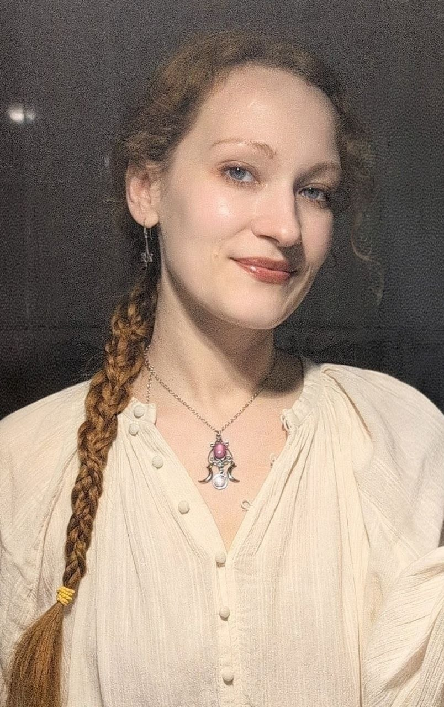
Підніміть руку, хто за останній тиждень…
Керівник
Ок.
…прочитав у коротке «Ок.» прихований невдоволений підтекст?
…побудував у голові катастрофічний сценарій, не маючи жодного факту?
Філософія, якою ви вже користуєтесь
Кожен з нас має набір правил за замовчуванням:
- як тлумачити чуже мовчання,
- що вважати своєю провиною,
- коли боротися, а коли відпустити,
- навіщо взагалі все це робити.
Ці правила і є філософією. Питання лише в тому, чи ви їх обрали, чи вони встановились самі.
Французький історик філософії П’єр Адо показав, що в античності філософія була способом життя: щоденними вправами для думки, а не системою текстів для іспиту.
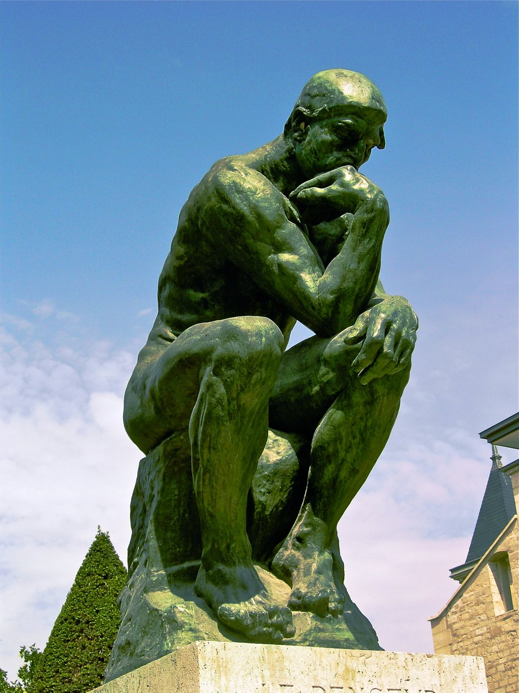
Огюст Роден, «Мислитель». Wikimedia Commons
Чотири набори інструментів
1
Ясність мислення
Сократ, Оккам, Генлон
2
Стресостійкість
Стоїки, Епікур, Лао-цзи
3
Сенс і вибір
Сартр, Камю, Франкл
4
Люди навколо
Бубер, Кант, Бентам, Арістотель
Кожен блок відповідає на одне практичне запитання: як думати ясно, як не зламатись, навіщо діяти, як бути з іншими.
Ясність мислення
Блок 1
Як перевіряти власні думки і не шукати змову там, де звичайний безлад
1
Ясність мислення
Сократ, Оккам, Генлон
2
Стресостійкість
Стоїки, Епікур, Лао-цзи
3
Сенс і вибір
Сартр, Камю, Франкл
4
Люди навколо
Бубер, Кант, Бентам, Арістотель
Сократ: питання замість повчань
Сократ нічого не записував і не читав лекцій. Він ходив афінським ринком і розпитував: що таке справедливість, мужність, добро.
Його переконання: істину неможливо передати в готовому вигляді. Вона народжується лише в спільному дослідженні.
Життя без дослідження не варте того, щоб його жити.
Сократ, за Платоном
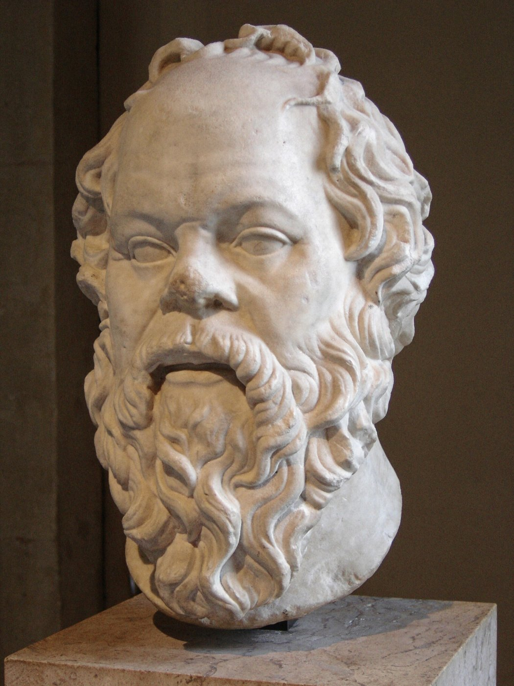
Бюст Сократа, Лувр. Wikimedia Commons
Ціна запитань
399 рік до н. е. Афінський суд засуджує Сократа на смерть: він нібито не шанує богів і «псує молодь».
Насправді він роками ставив незручні запитання впливовим людям, і ті виглядали на людях не надто розумними.
Друзі підготували втечу. Сократ відмовився й випив цикуту.
Жак-Луї Давид, «Смерть Сократа», 1787
Метод у чотири кроки
Теза: «Мене ніхто не цінує на роботі»
1. Теза
Людина висловлює тверде переконання.
«Мене ніхто не цінує»
2. Еленхос
Уточнювальні запитання без критики в лоб.
«Хто саме ніхто? Що конкретно сталося?»
3. Апорія
Теза натрапляє на контрприклади й розсипається.
«Ну, минулого місяця мене хвалили…»
4. Маєвтика
Народжується зважена думка.
«Мене не помітили в цьому проєкті. Я можу про нього розповісти»
Маєвтика (μαιευτική) означає «повивальне мистецтво». Мати Сократа була повитухою, і він казав, що теж допомагає народжуватись, тільки думкам.
Як це звучить зсередини
Мене ніхто не цінує на роботі.
Хто саме? Усі сорок людей у компанії?
Ну… керівник і двоє з команди.
Що конкретно вони зробили чи не зробили?
На зустрічі не згадали мою частину звіту.
А чи були випадки, коли твою роботу помічали?
Були. У вересні. І колега вчора дякувала.
Тож точніше буде так: «На цій зустрічі мою частину пропустили». Що з цим можна зробити?
Сократ у сучасній психотерапії
Когнітивно-поведінкова терапія (КПТ) зробила сократівські запитання робочим інструментом для автоматичних думок.
| Пастка мислення | Як звучить | Сократівське запитання |
|---|---|---|
| Катастрофізація | «Я провалю співбесіду, і все пропало» | Який найімовірніший результат, а не найгірший? |
| Читання думок | «Вона точно вважає мене дурнем» | Звідки я це знаю? Що вона сказала насправді? |
| Узагальнення | «У мене ніколи нічого не виходить» | Ніколи? Згадай три винятки. |
| Чорно-біле мислення | «Якщо не ідеально, то провал» | Що лежить між «ідеально» і «провал»? |
| Ярлики | «Я невдаха» | Це опис учинку чи вирок усій людині? |
Письмовий діалог із собою за 10 хвилин
Коли накриває тривога, візьміть аркуш і напишіть від руки відповіді:
- Що саме я зараз думаю? Одним реченням.
- На яких фактах це ґрунтується?
- Які факти свідчать проти?
- Що я сказав би близькому другові в такій самій ситуації?
- Як звучить точніша версія думки?
Чому саме письмово
Думка в голові ходить по колу. На папері вона стає текстом, а текст можна перевірити, як чужий аргумент.
Запитання 4 найсильніше
З другом ми рідко говоримо так жорстко, як із собою. Це швидкий тест на справедливість.
Ментальні бритви
Бритвами у філософії називають правила, якими «зрізають» зайві пояснення.
Бритва Оккама
Зрізає зайві припущення.
Коли пояснень кілька, починайте з найпростішого.
Бритва Генлона
Зрізає підозру в злому умислі.
Помилка, втома й неуважність трапляються частіше за підступність.
Вільям Оккам
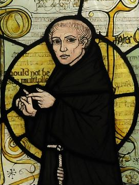
Вільям Оккам, ескіз за вітражем. Moscarlop, Wikimedia Commons
Англійський чернець-францисканець, бл. 1287–1347. Писав про логіку, богослов’я і фізику Арістотеля. Посварився з Папою і решту життя провів під захистом імператора в Мюнхені.
Вважав, що існування речей засвідчує тільки безпосередній досвід. Звідси вимога не вигадувати сутностей, яких ніхто не бачив.
Pluralitas non est ponenda sine necessitate.
Не слід примножувати сутності без потреби
Чуєте тупіт копит за вікном?
Коні
Припущень: 0
У місті є коні. Вони інколи ходять вулицею.
Зебри
Припущень: 3+
Зебри втекли із зоопарку. Або приїхав цирк. І ніхто не помітив…
Де це працює: діагностика в медицині, наукові гіпотези, фактчекінг, простий і надійний код.
Чого бритва не каже: що найпростіше пояснення завжди правильне. Вона каже, з якого починати перевірку.
Фото: Muhammad Mahdi Karim, Wikimedia Commons
Бритва Генлона
Ніколи не приписуйте злому умислу те, що цілком пояснюється дурістю.
Роберт Генлон, 1980
Ґете, «Страждання молодого Вертера», 1774:
непорозуміння і лінощі завдають світові більше шкоди, ніж хитрість і злоба.
Бернард Інгем, британський урядовий прессекретар:
Cock-up before conspiracy. Спершу думай про плутанину, а вже потім про змову.
По суті це презумпція невинуватості для щоденного спілкування.
Кейс: лист без відповіді
Ситуація
Ви вчора надіслали колезі терміновий лист. Відповіді досі немає. Що ви подумаєте?
Перша думка: «Мене ігнорують. Знецінюють. Може, навіть підсиджують».
Генлон: людина замоталась на дзвінках, лист загубився серед сотні інших, чернетка лишилась невідправленою.
Оккам: версія «підсиджують» вимагає мотиву, плану й прихованості. Версія «не встиг» вимагає лише звичайного вівторка.
Сократ: які в мене факти? Чи бувало, що ця людина відповідала? Що найпростіше зробити? Нагадати одним рядком.
Стресостійкість
Блок 2
Що робити з тривогою, бажаннями і тим, що від нас не залежить
1
Ясність мислення
Сократ, Оккам, Генлон
2
Стресостійкість
Стоїки, Епікур, Лао-цзи
3
Сенс і вибір
Сартр, Камю, Франкл
4
Люди навколо
Бубер, Кант, Бентам, Арістотель
Стоїки: від раба до імператора
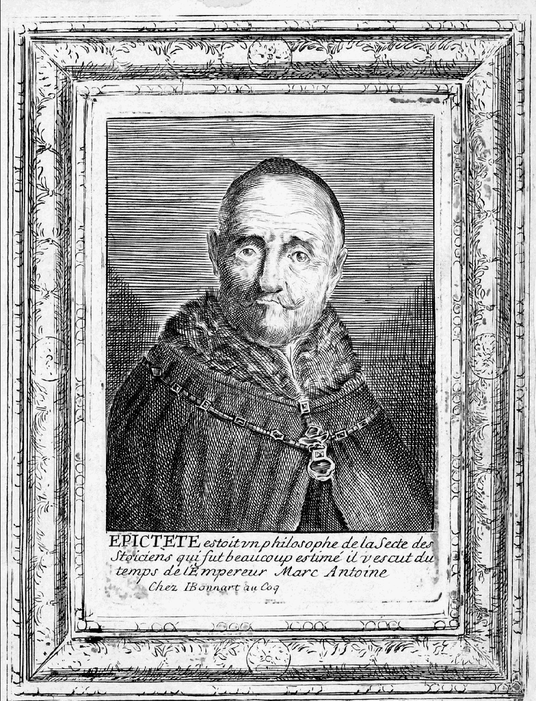
Епіктет, гравюра Анрі Боннара, бл. 1700
Епіктет народився рабом, кульгав, а згодом став одним з найшанованіших учителів Риму.
Марк Аврелій був римським імператором і вів щоденник, який ми тепер читаємо як «Роздуми».
Одна й та сама філософія працювала для людини, в якої не було нічого, і для людини, в якої було все.
Людей тривожать не речі, а їхні думки про речі.
Епіктет
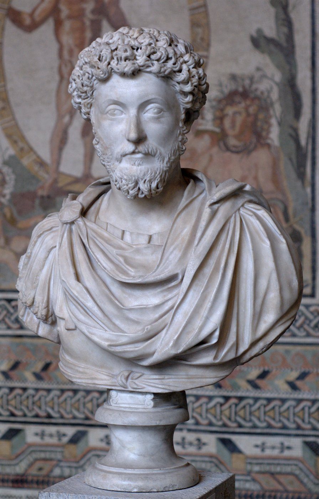
Марк Аврелій, Гліптотека, Мюнхен
Дихотомія контролю
Не залежить від мене
результати рішень, реакції інших людей, економіка, погода, минуле, майбутнє
тут народжується тривога
Залежить від мене
мої судження, наміри, реакції, цінності, зусилля
Одне залежить від нас, інше ні.
Епіктет
Стоїки не кажуть «байдуже, що відбувається». Вони кажуть: вкладайте сили у внутрішнє коло, а на зовнішнє дивіться спокійно.
Марк Аврелій: якщо тебе засмучує щось зовнішнє, то турбує тебе не воно, а твоє судження про нього. А судження в твоїй владі.
Кейс: рейс скасовано
Ситуація
Завтра зранку важлива зустріч в іншому місті. О 22:00 приходить SMS: ваш рейс скасовано.
Поза контролем: скасування, погода, черга на стійці, настрій партнерів.
У контролі: шукати інший рейс чи потяг, написати партнерам зараз, запропонувати онлайн-формат, лягти спати замість гортання новин.
Злість на авіакомпанію рейсу не поверне. Лист партнерам о 22:05 може врятувати зустріч.
Епікур: насолода без бенкету
Слово «епікуреєць» сьогодні означає гурмана. Сам Епікур жив на хлібі й воді і писав другові:
Пришли мені горщик сиру, щоб я міг розкошувати, коли захочу.
Мета Епікура не задоволення будь-якою ціною, а два стани спокою:
- атараксія: незворушність душі,
- апонія: відсутність болю в тілі.
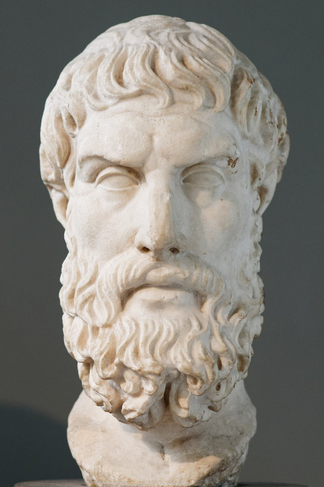
Бюст Епікура, Британський музей
Фільтр бажань
Природні й необхідні
їжа, тепло, сон, безпека, дружба
Природні, але не необхідні
вишукана їжа, гарні речі, комфорт понад потребу
Ні природні, ні необхідні
статус, слава, «щоб як у всіх», нескінченний скролінг
Перші легко задовольнити, і без них ми страждаємо.
Другі приємні, але без них можна жити.
Треті не мають межі: скільки б не отримав, хочеться ще.
Запитання перед покупкою
До якого ярусу належить це бажання? І що станеться, якщо я його не виконаю?
Лао-цзи і принцип У-вей
無為
у-вей: дія через недіяння
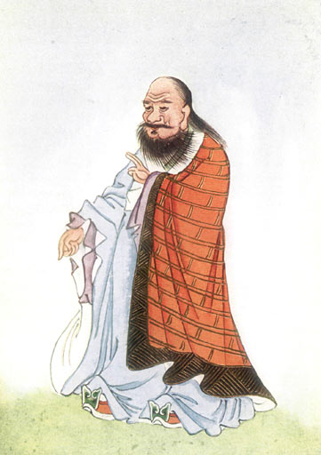
Лао-цзи, китайська ілюстрація
У-вей не означає лінощі чи прокрастинацію. Це вміння не боротися з природним плином речей.
Немає у світі нічого м’якшого й слабшого за воду. Але ніщо не перевершить її, коли треба подолати тверде.
Дао де цзін, 78
Кухар Дін
У Чжуан-цзи кухар дев’ятнадцять років розбирає туші одним ножем, і лезо досі гостре. Він не рубає кістку, а веде ніж уздовж природних суглобів.
Три школи поруч
| Стоїцизм | Епікуреїзм | Даосизм | |
|---|---|---|---|
| Звідки стрес | Хочемо контролювати те, що нам не підвладне | Женемося за бажаннями без межі | Боремося з плином подій |
| Відповідь | Розділити внутрішнє і зовнішнє | Розрізнити справжні й нав’язані потреби | Діяти вчасно і без надзусилля |
| Вправа на тиждень | Увечері розкласти день на два кола | Перед покупкою визначити ярус бажання | Помітити одну «стіну», яку б’єте лобом |
Сенс і вибір
Блок 3
Як брати відповідальність за свій вибір і знаходити сенс у рутині та кризі
1
Ясність мислення
Сократ, Оккам, Генлон
2
Стресостійкість
Стоїки, Епікур, Лао-цзи
3
Сенс і вибір
Сартр, Камю, Франкл
4
Люди навколо
Бубер, Кант, Бентам, Арістотель
Жан-Поль Сартр: погана віра
Людина приречена бути вільною.
Жан-Поль Сартр
Ми не обирали, чи бути вільними. Але відтоді кожна дія є вибором, навіть відмова вибирати.
Погана віра (mauvaise foi) означає вдавати перед собою, що вибору не було.
Офіціант Сартра
Він рухається надто старанно, кланяється надто точно, грає «офіціанта» так, ніби інакше не може. Хоча він людина, яка щоранку обирає цю роль.
Жан-Поль Сартр, 1967. Wikimedia Commons
Як звучить погана віра
«У мене не було вибору»
→
«Я обрав це, бо інший варіант здавався дорожчим»
«Такий вже я є»
→
«Досі я поводився так. Можу спробувати інакше»
«Винні обставини»
→
«Обставини звузили вибір. З того, що лишилось, обирав я»
«Так усі роблять»
→
«Я вирішив зробити так само, як усі»
Друга колонка звучить неприємніше. Зате в ній є ви, і ви можете щось змінити.
Кейс: «Не було вибору»
Ситуація
Подруга розповідає: «Я ненавиджу свою роботу третій рік. Але в мене не було вибору, я мусила залишитись».
Що сказав би Сартр: вибір був. Можливо, всі інші варіанти були страшнішими: менша зарплата, невідомість, розмова з батьками. Але залишитись було рішенням.
Чому це важливо: поки «не було вибору», немає й виходу. Щойно це стає рішенням, його можна переглянути.
Чого Сартр не каже: «звільнись завтра». Він каже: визнай, що вирішуєш ти, і вирішуй свідомо.
Альбер Камю: Сізиф
Боги покарали Сізифа: вічно котити камінь на гору, звідки той щоразу скочується.
Камю бачить у ньому кожного з нас: дедлайни, побут, рутина.
Абсурд: ми шукаємо сенс, а світ мовчить. Відповідь Камю не втеча і не відчай, а бунт: жити свідомо й з гідністю.
Треба уявляти Сізифа щасливим.
Альбер Камю, «Міф про Сізифа»
Тиціан, «Сізиф», 1548–1549, Прадо
Віктор Франкл: воля до сенсу
Віктор Франкл. Prof. Dr. Franz Vesely, Wikimedia Commons
Віденський психіатр. Пройшов чотири концтабори, зокрема Аушвіц. Втратив батьків, дружину й брата.
Після звільнення за дев’ять днів написав книжку «Людина в пошуках справжнього сенсу».
Хто має навіщо жити, витримає майже будь-яке як.
Франкл цитує Ніцше
Головною рушійною силою людини Франкл вважав не насолоду і не владу, а пошук сенсу. На цьому побудована його логотерапія.
Де шукати сенс за Франклом
Творення
Робота, творчість, допомога іншим.
Те, що ви даєте світу.
Переживання
Любов, краса природи, мистецтво, зустріч з людиною.
Те, що ви берете від світу.
Ставлення
Гідність і мужність перед неминучим стражданням.
Те, як ви стоїте перед тим, чого не змінити.
Третій шлях відкритий навіть тоді, коли перші два закриті.
Люди навколо
Блок 4
Як бачити в людях людей, приймати важкі моральні рішення і розуміти, що тримає дружбу
1
Ясність мислення
Сократ, Оккам, Генлон
2
Стресостійкість
Стоїки, Епікур, Лао-цзи
3
Сенс і вибір
Сартр, Камю, Франкл
4
Люди навколо
Бубер, Кант, Бентам, Арістотель
Мартін Бубер: Я–Ти і Я–Воно
Я–Воно
Інша людина як функція: ресурс, засіб, перешкода.
Кур’єр, «той, хто має закрити задачу», «проблема в команді».
Я–Ти
Зустріч двох суб’єктів без розрахунку і маніпуляцій.
Ви бачите людину цілком, а не лише її роль.
Бубер не вимагає жити тільки в Я–Ти: без Я–Воно не працює жоден офіс. Небезпечно, коли інших стосунків, крім Я–Воно, не лишається.
Усяке справжнє життя є зустріччю.
Мартін Бубер, «Я і Ти»
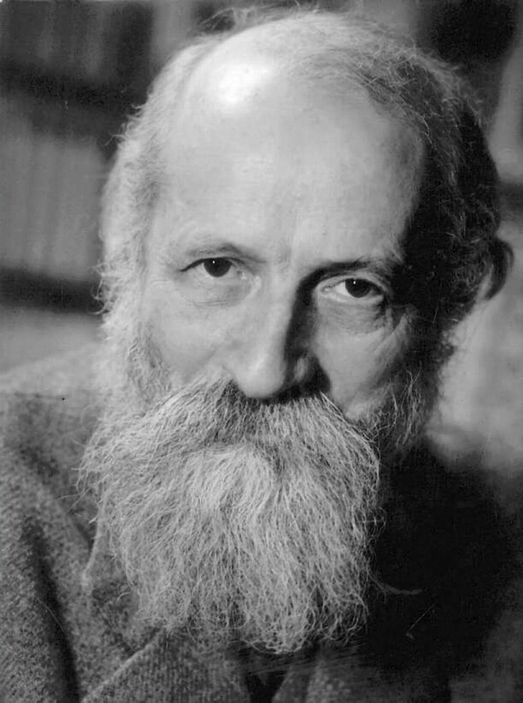
Мартін Бубер. Wikimedia Commons
Кант чи утилітаристи?
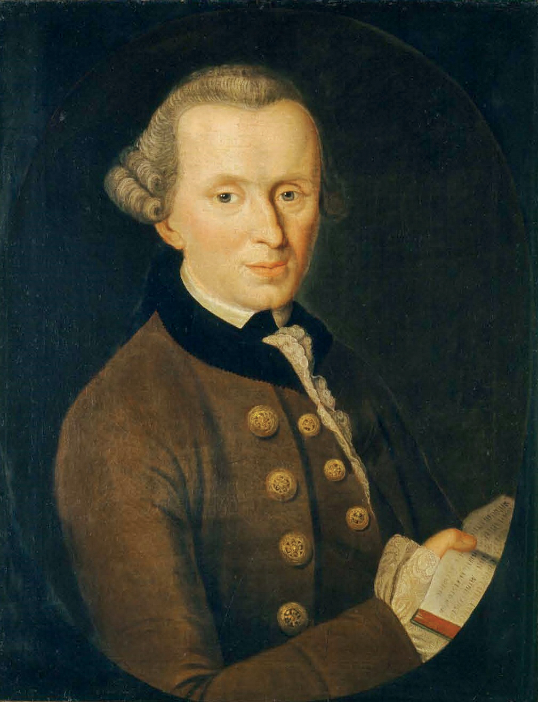
Іммануїл Кант
Мораль визначає правило, а не наслідок.
Чини так, щоб правило твоєї дії могло стати загальним законом.
Людина завжди мета і ніколи лише засіб.
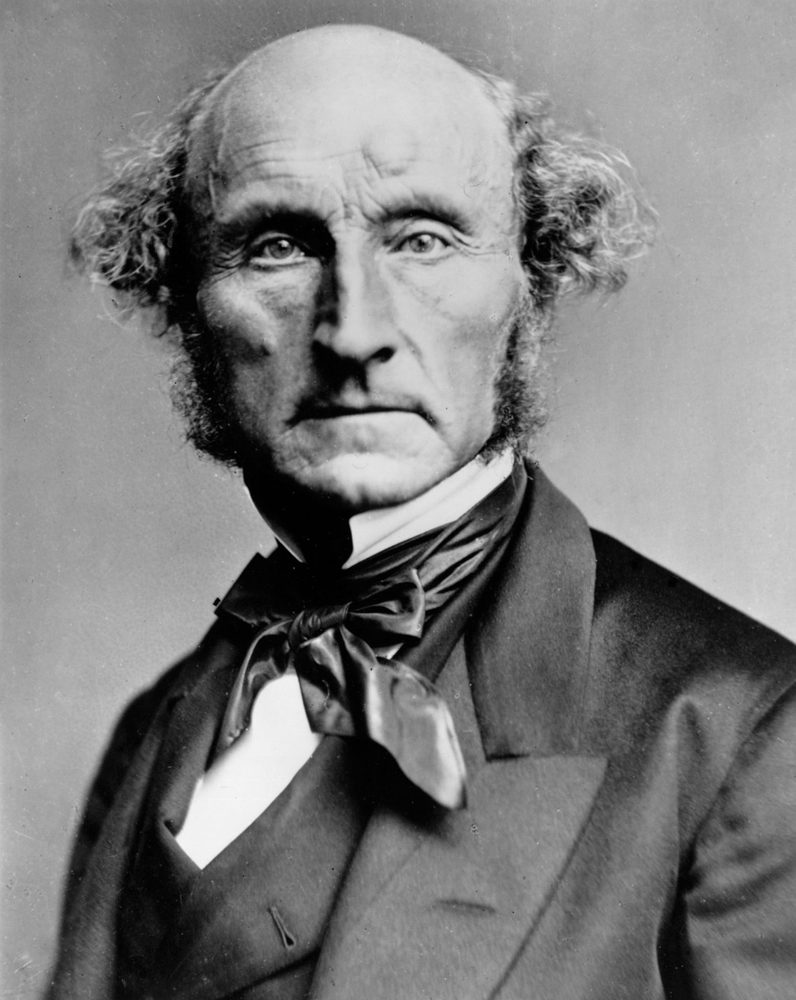
Бентам і Мілль
Мораль визначають наслідки.
Правильна та дія, що дає найбільше щастя найбільшій кількості людей.
Рахуємо всіх, і кожен важить однаково.
Де межа між благом більшості та захистом меншості?
Портрети: Й. Г. Бекер (Кант), Г. В. Пікерсгіл (Бентам), London Stereoscopic Company (Мілль)
Кейс: вагонетка
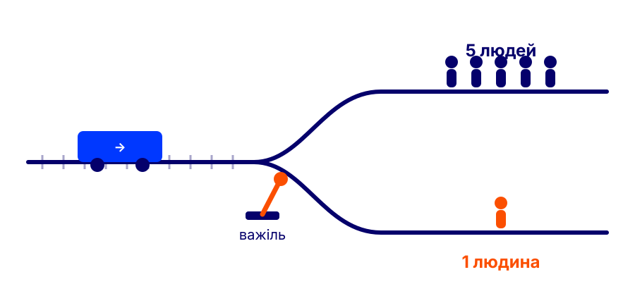
Філіппа Фут, 1967
Ситуація
Вагонетка без гальм мчить на п’ятьох. Ви біля важеля: можна перевести її на колію, де одна людина.
Утилітарист: тягнути. П’ять життів більше за одне.
Кантіанець: ви робите людину засобом для порятунку інших. Чи маєте право?
Чи є третій варіант?
Арістотель: три види дружби
Заради користі
Діловий нетворкінг, партнери, сусіди по проєкту.
Зникає користь, зникає зв’язок.
Заради задоволення
Компанія на вихідні, спільне хобі.
Змінюються інтереси, друзі розходяться.
Заради чесноти
Рівні люди, які поважають одне одного і хочуть один одному добра.
Найрідкісніша і найміцніша.
Перші дві не погані. Вони просто тримаються на чомусь зовнішньому, а третя тримається на самих людях.
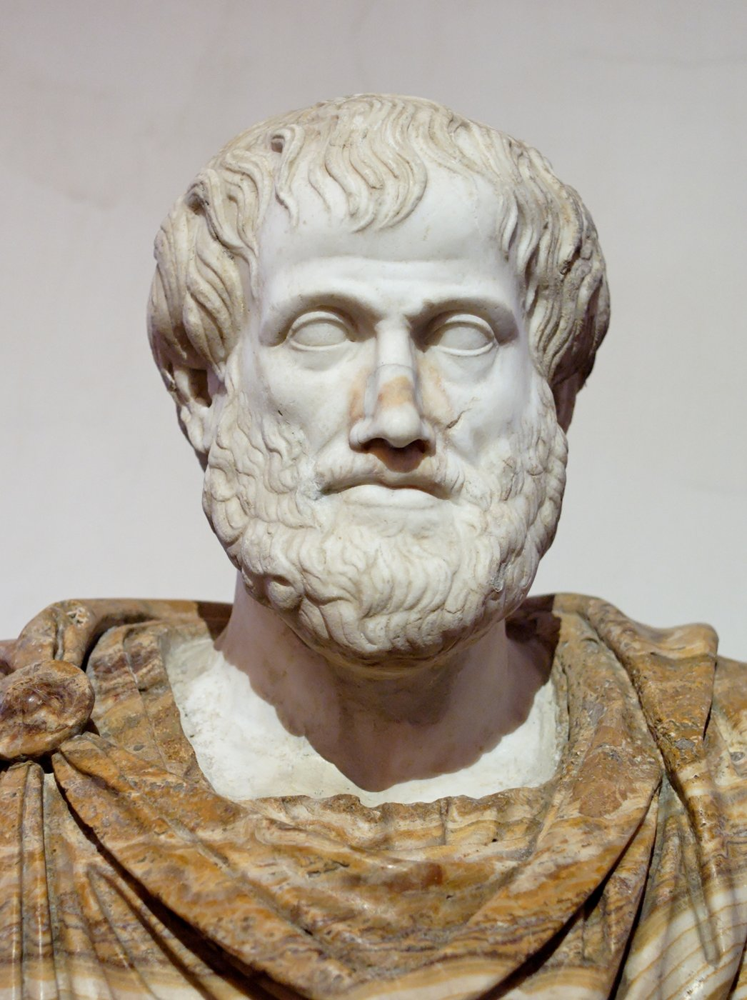
Арістотель, мармурова копія за Лісиппом
Що забрати з собою
Рафаель, «Афінська школа», 1509–1511
Чотири правила на кожен день
Помітили тривожну думку?
Сократівський діалог: перевірте факти
Підозрюєте змову чи накручуєте образу?
Бритви Оккама і Генлона
Штормить від новин і хаосу?
Дихотомія контролю: два кола
Говорите з колегою чи партнером?
Перемкніться з Я–Воно на Я–Ти
А коли здається, що вибору немає, згадайте Сартра. Коли все здається марним, згадайте Франкла.
Що почитати далі
Платон
Апологія Сократа
Промова Сократа на суді. Коротко і дуже живо.
Марк Аврелій
Наодинці з собою (Роздуми)
Щоденник імператора, якого ніхто не мав читати.
Віктор Франкл
Людина в пошуках справжнього сенсу
Табір, логотерапія і питання «навіщо».
Альбер Камю
Міф про Сізифа
Есей про абсурд і про те, чому варто жити.
Мартін Бубер
Я і Ти
Невелика книжка про те, як ми зустрічаємо інших.
Арістотель
Нікомахова етика
Книги VIII–IX про дружбу.
Дякую! Ваші питання
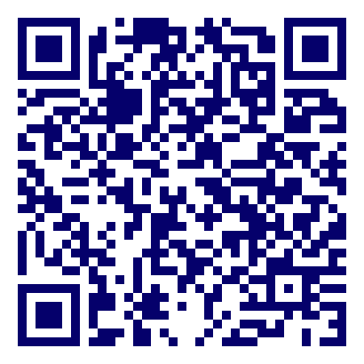
Ця презентація
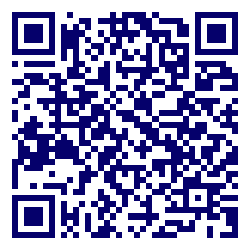
Що почитати далі

Філософія як ОС мислення